Faster root-cause analysis
Move from IP availability to port state, then into payload transport and device response without switching tools.
Thread-IoT Professional Toolkit
Lead with the dashboard, move into any tool in one click, and keep network diagnostics, protocol testing, MQTT, serial labs, BLE inspection, firmware workflows, and payload utilities inside one professional Windows workspace.
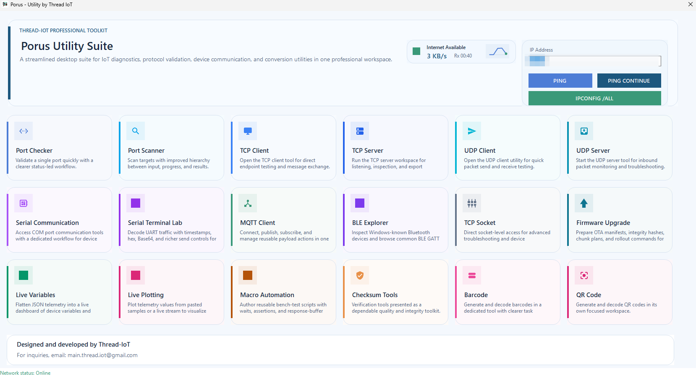
Customers immediately see the full value of the suite from one clean control surface with ping, IP tools, internet status, and module access.
TCP, UDP, Serial, MQTT, BLE, and raw socket tooling for day-to-day embedded and edge validation.
Checksums, QR and barcode generation, live plotting, payload helpers, and macro automation.
Verification
Use the SHA256 checksum below to confirm that the downloaded file matches the release published by Thread-IoT.
771504B5EA0ECB9A6CBA688A776C9DEBD559B9BC6247A655A1F8CD9CD4D3D048
Note: Windows may still show a reputation warning for a newly published or self-signed desktop executable. The checksum helps users validate file integrity.
Why It Matters
IoT teams rarely debug one layer at a time. Porus Utility uses the dashboard as a high-value entry point, then connects transport checks, device messaging, adapter visibility, packet-level validation, and field-oriented tools into a single desktop suite so engineers can move faster with less context switching.
Move from IP availability to port state, then into payload transport and device response without switching tools.
Use structured desktop workflows for MQTT, TCP, UDP, serial communication, BLE discovery, and firmware operations.
Operators, QA engineers, and firmware developers get one consistent toolkit for validation, diagnostics, and quick reproduction.
Capabilities
Each module is designed as a focused workspace while still feeling part of one professional suite.
Validate a single endpoint quickly with IP and port testing plus latency checks.
Inspect open ports, protocol states, process IDs, and active connections with filters and sorting.
Connect to TCP endpoints, send payloads, and inspect server responses.
Run a local listener, monitor active clients, and export server activity logs.
Send datagrams, validate packet delivery paths, and review responses in one place.
Start a UDP listener, capture incoming traffic, and inspect session activity.
Work with COM ports, configure line settings, and exchange device messages from a clean desktop workflow.
Inspect decoded text, raw hex, Base64 frames, timestamps, and saved send actions.
Publish, subscribe, manage broker profiles, and control reusable payload flows for IoT messaging.
Scan for Bluetooth endpoints and inspect GATT references for connected or simulated workflows.
Open raw socket sessions for advanced endpoint troubleshooting and protocol experimentation.
Prepare OTA workflows, manifests, integrity validation, and controlled upload steps with user confirmation.
Summarize adapters, MAC addresses, IP details, DNS, and gateway visibility in compact cards.
Track device data in a more accessible form for monitoring and quick validation tasks.
Visualize changing values for telemetry, diagnostics, and bench-side response analysis.
Create repeatable test actions and bench sequences to reduce manual verification work.
Generate dependable integrity outputs for firmware, payloads, and validation workflows.
Create and decode barcode content for asset, payload, or production support tasks.
Generate and decode QR content for provisioning, support, and field workflow needs.
Developer Workflows
Check adapter details, validate reachability, inspect ports, open client sessions, and verify message exchange while keeping logs visible.
Exercise TCP, UDP, serial, and MQTT paths with repeatable inputs before moving to production benches or field deployments.
Generate checksums, encode data, analyze live values, inspect BLE, and create support assets like QR or barcode content.
Use controlled firmware workflows and visible confirmations to reduce operator mistakes during OTA or upgrade preparation.
Screens
The interface is organized as dedicated modules so developers can focus on one problem without losing the overall toolkit feel.
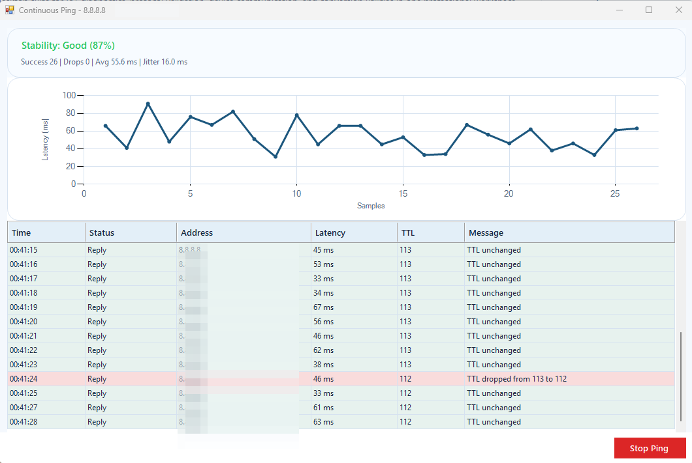
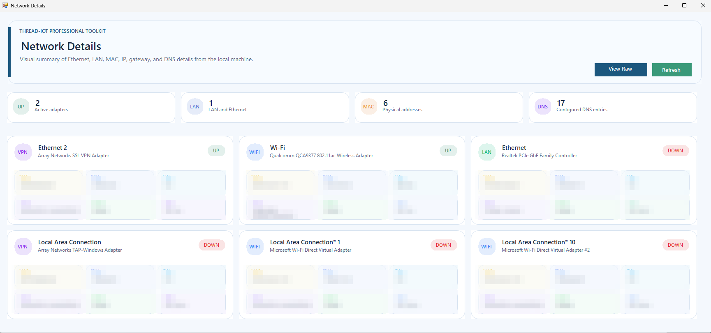
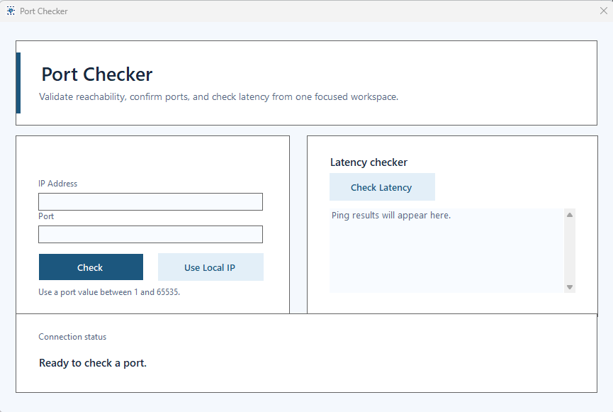
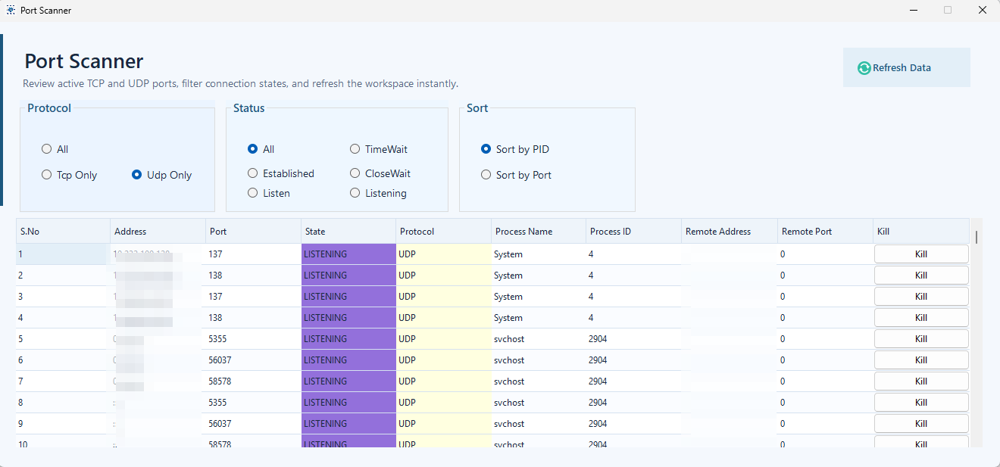
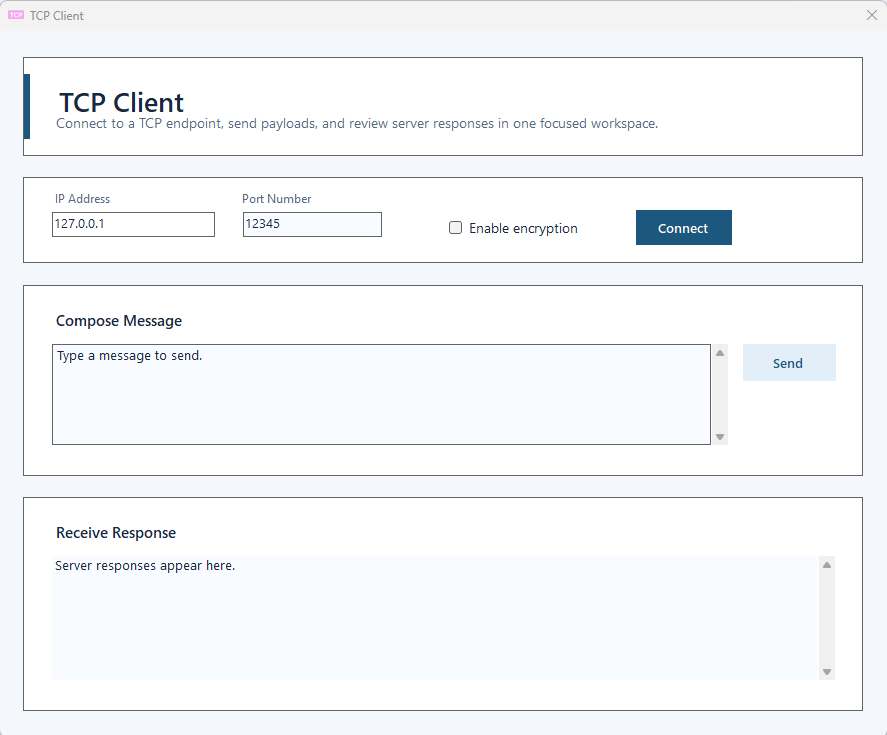
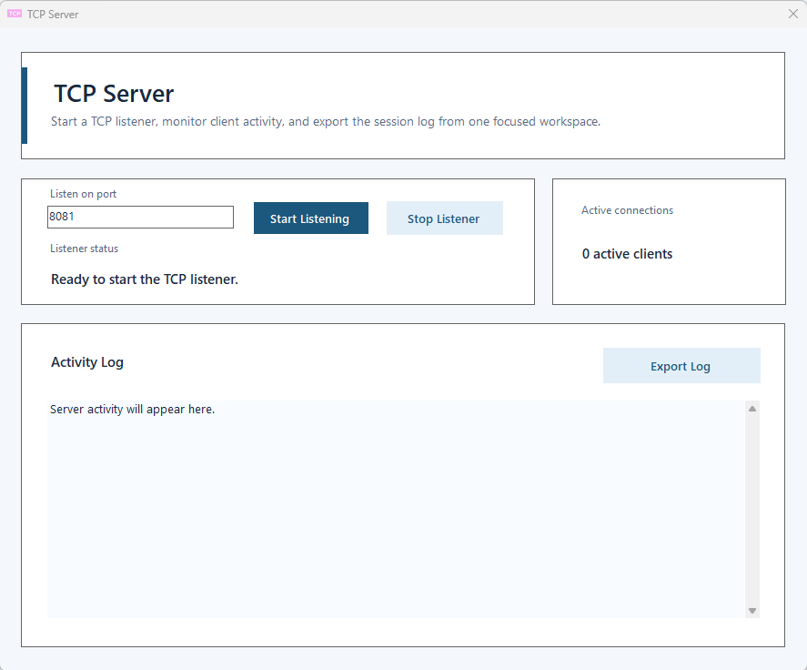
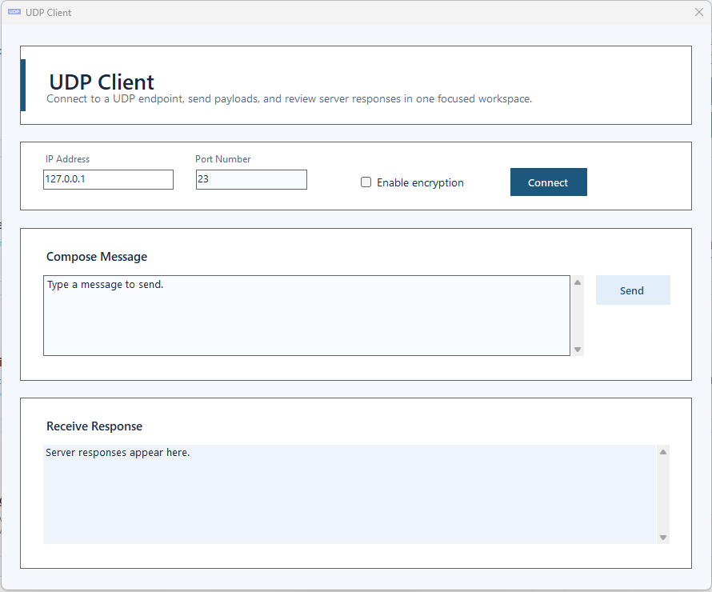
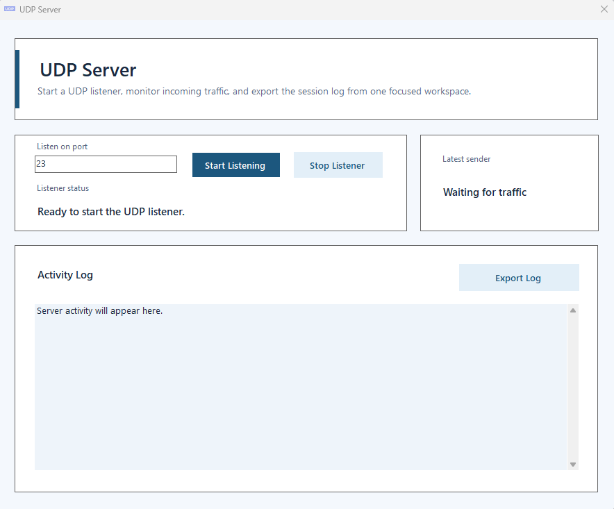
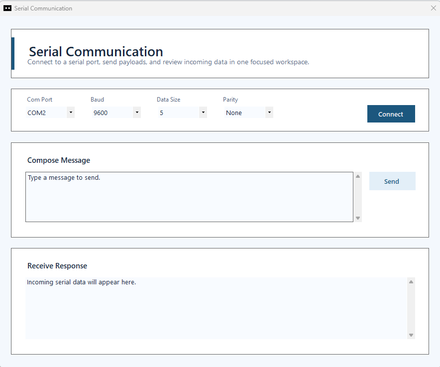
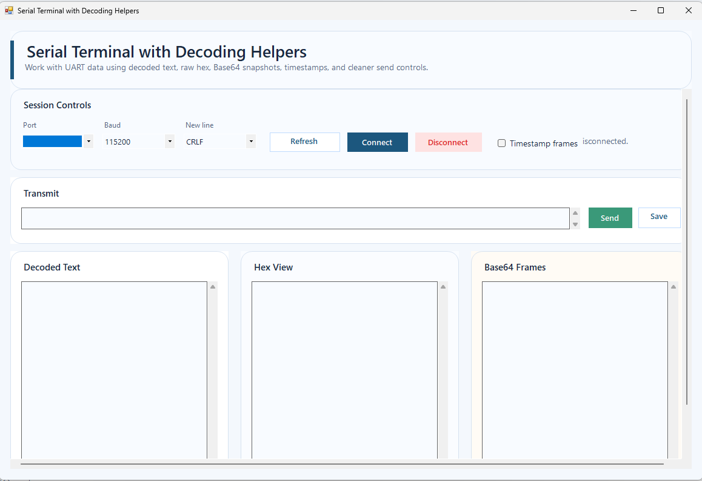
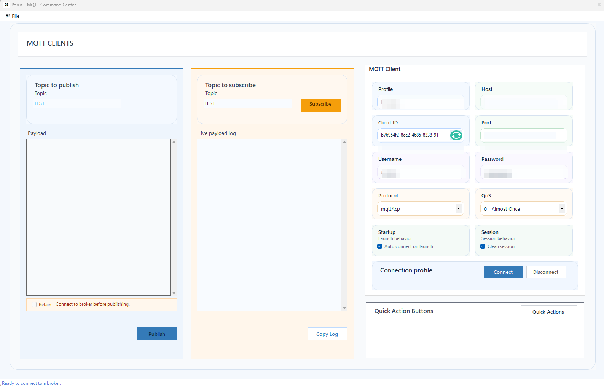
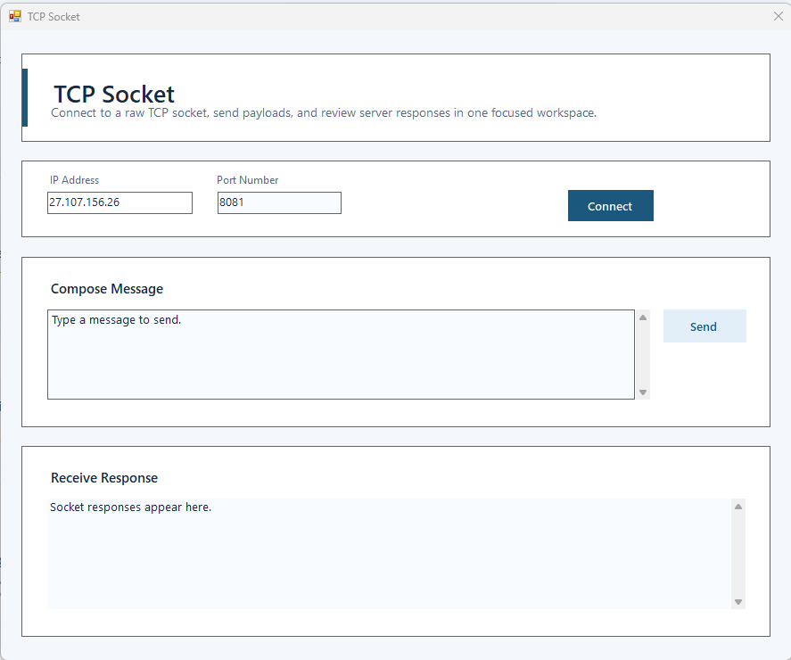
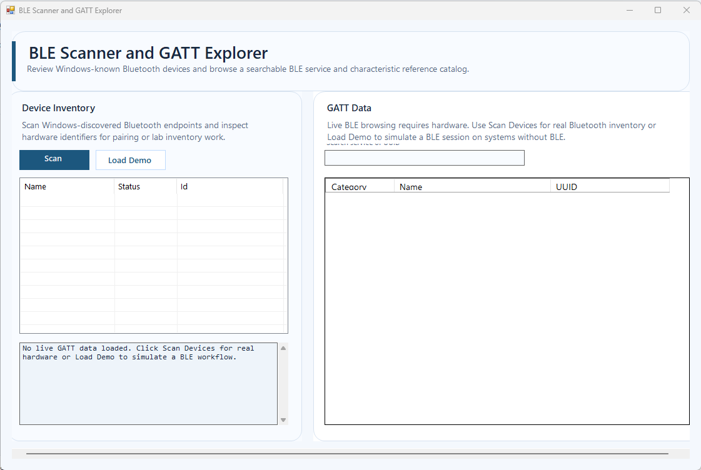
Release Ready
Porus Utility is built for developers who need immediate visibility across networking, transport, messaging, serial links, BLE, and firmware support workflows.